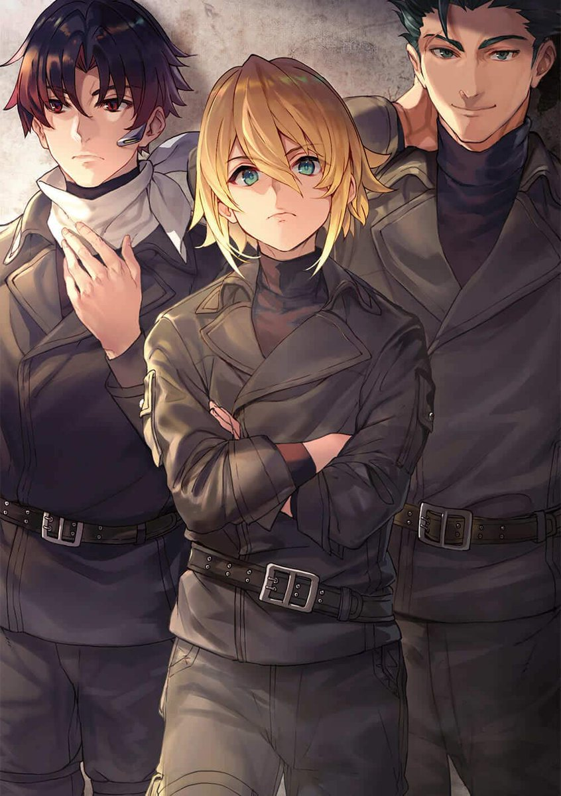
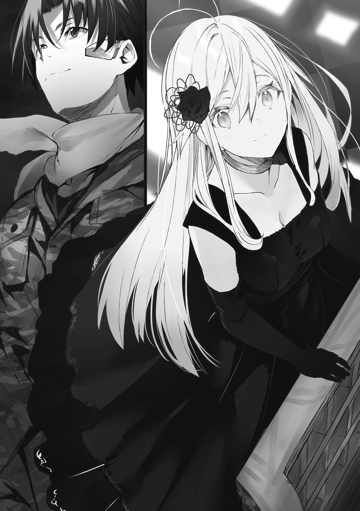
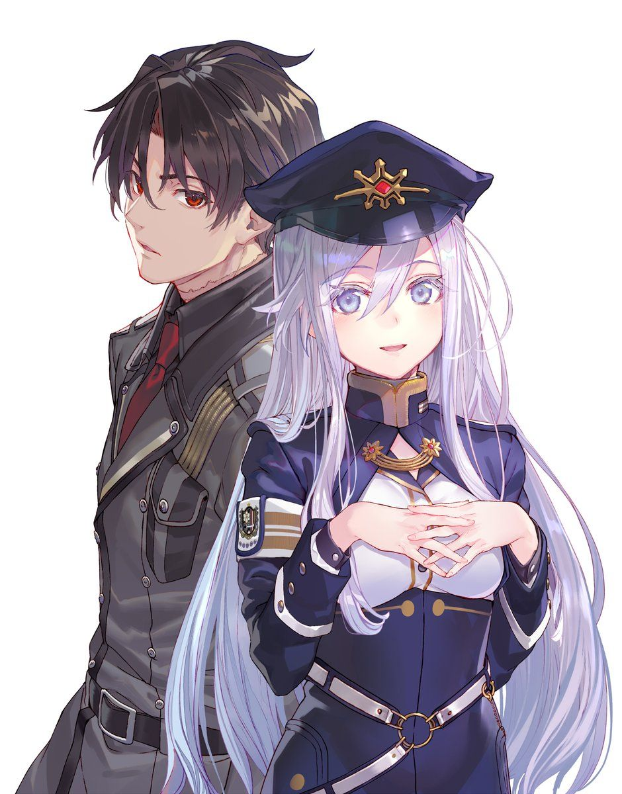

Eighty-Six Key Terminology
Eighty-Six
The derogatory name for all of the Colorates (colored races) living inside the Republic of San Magnolia. In the Republic's war against the neighboring country Giadian Empire, the Eighty-Six are forced to fight on the front line with poorly armored mecha called Juggernauts.
Legion
The autonomous drones manufactured by the Giadian Empire that invaded the Republic of San Magnolia. They are a mixture of various types of battle drones with different functionalities, which makes the Legion extremely powerful on the battlefield.


Eighty-Six
War Without Casualties
STORY SETTING
The Republic of San Magnolia has long been under attack from the neighboring Giadian Empire's army of unmanned drones known as the Legion. After years of painstaking research, the Republic finally developed autonomous drones of their own, turning the one-sided struggle into a war without casualties-or at least, that's what the government claims.STORY INTRO
In truth, there is no such thing as a bloodless war. Beyond the fortified walls protecting the eighty-five Republic territories lies the "nonexistent" Eighty-Sixth Sector. The young men and women of this forsaken land are branded the Eighty-Six and, stripped of their humanity, pilot the "unmanned" weapons into battle. Shin, the leader of an elite squad of Eighty-Six pilots, goes out of his way to help his squadmates survive in the battlefield. While Shin and his friends struggle in hell, Lena, a young Republic officer of the Alba race (the non-colored race as well as the ruling race of the Republic), is appointed as the remote commander of Shin's squad. Despite the Republic's discriminatory attitude towards the Eighty-Six, Lena believes that the Eighty-Six should be treated equally as Republic citizens. And from here starts the tragic but legendary story of these young men and women.Light Novel Illustrations


